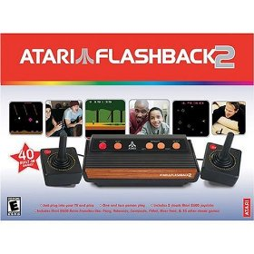
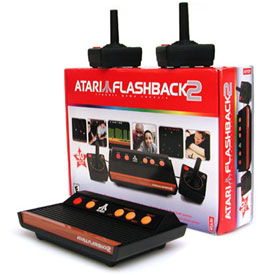
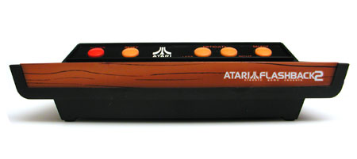

Feeling a bit Nostalgic?If you need a little Atari fix in your life, and you just do not feel like using Mame. Or perhaps you want to sit in front of the TV like you did 25 years ago and play some of those old Atari games, well here is your chance. Check this out:    This was created by Curt Vendel, whose company Legacy Engineering Group designs other home video game and video arcade products, and is also responsible for the server this website is running on, the Atari Museum. This has a number of original and a few new homegrown games for the old Atari 2600. My game, Human Cannonball (as ported to the 2600) and a version of Space Dual are both ported on this device, so there is another good reason to go buy one. Here are a few links where you can buy one today: Atari Flashback 2 Plug and Play Atari Flashback 2.0 Included gamesThe available games are arranged into four categories selectable from an on-screen menu. Once a game is selected, the only way back to the menu is to use the power button to turn the console off and on again. The games listed below as hacks used other games' code as a starting point and modified their gameplay or appearance. Homebrews were written from scratch by Atari fans in the 1990s and 2000s. Unreleased prototypes are games which were developed by Atari Inc. in the 1970s and 1980s but never sold to consumers; some of these games may have bugs or be incomplete. A few of the games listed are new and exclusive to the Flashback 2. Adventure Territory
Arcade Favorites
Skill and Action Zone
Space Station
Paddle GamesThe console also includes two hidden titles which require the use of paddle controllers. The Flashback 2 does not come with paddle controllers, so these games cannot be played unless the user has an original set of Atari 2600 paddle controllers. To access the hidden paddle game menu, the user must press up on the joystick 1 time, pull down 9 times, push up 7 times, and pull down 2 times (this represents the year 1972, in which Pong first appeared). The code must be entered steadily and without pauses (enter it too quickly and it won't work).
Curt also developed the USB Joystick, a device that connects to your PC, Mac, or Linux machine, and lets you play some of those old Mame (or other emulator games with the feel of the old Atari classic. Check it out, it is avaialble here |  |
{kind=link}
{kind=link}
{kind=link}
{kind=link}
{kind=link}